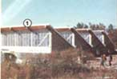
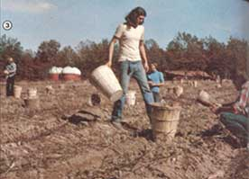
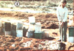
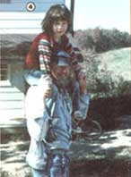
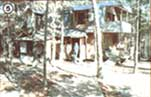
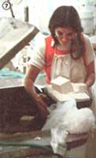
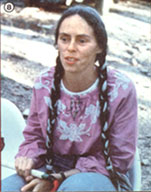
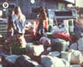
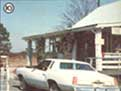

A Good Look At The Farm
Stephen Askin's group of self-professed peace loving hippies settled down on a community farm of 1750 acres. There are 1200 members that are part of the farm. Aspects include spirituality, collectivity, poverty, sun power, PLENTY, and spreading the word.
By the Mother Earth News editors
March/April 1980
Back in 1970, Stephen Gaskin - a religious teacher in that mecca for the 60's Peace and Love movement, San Francisco - left on a speaking tour of the U.S., trailed by 30 remodeled school buses full of young people. For seven months, the mobile community lived together, grew together, and traveled together over the highways of America. When the tour was done, "The Caravan" was too united in purpose and experience to be willing to split up, so the community looked for some farmland . . . and settled in rural Summertown, Tennessee.
Today, ten years later, the community is still going strong (it even has treaties with some foreign countries!). In fact, some of the activities the folks in this collective are undertaking are so worthwhile that it's high time we gave MOTHER's readers. . .
As you know, a lot of well-intentioned groups who head "back to the land" fall flat on their faces. Inexperienced homesteaders find that grubbing out a rural existence can be a harsh, demanding task ... each winter such communities get smaller and their debts get bigger . . . and, before long, the members all have to flee "back to the city".
And certainly Stephen Gaskin's group of self-professed "peace-loving hippies" was as unlikely a collection of city slickers as ever tried to turn "greenhorns" into green thumbs. After all, the initial conglomeration consisted of 250 men, women, and children - including a couple of newborn babies - and their only "equipment" consisted of some beat-up old schoolbuses!
Yet take a visit to the group's 1,750-acre stand - called, simply enough, The Farm - today, and what will you see? First of all, you'll be surrounded by a great many people: Gaskin's community presently has some 1,200 gaily dressed, longhaired members. Furthermore, a good half of the residents are children (and are among the most self-assured, helpful, and friendly young'uns you'll ever find anywhere).
In addition to the people, you'll see an amazingly complex physical setup. The Farm - besides having a 150-acre food-raising operation - includes a dental clinic, medical clinic, and infirmary (with a complete infant intensive care and testing unit) ... a new passively solar-heated school . . . a pen-to-presses book, record, and videotape company ... wood, machine, and electronics workshops . . . entire buildings devoted to baking, milling, canning/freezing, motor repair, and preparing tasty soy food products . . . its own bank, laundry, architect's office, greenhouse, and radio station ... and more projects are on the way.
And - perhaps most important of all - you'll notice that the relaxed and amiable community members are extremely dedicated folks. They work steadily and they work hard!
How does The Farm do it?! What "glue" keeps this collection of humanity together while it expands at home and reaches out on a global scale? Does the community have a "reason for being", or is it really ,just "an old hippies' rest home"?
For those answers, you have to examine the core idea of The Farm, a belief in . . .
SPIRITUALITY
"Don't ask for a mantra. Just hit the ball." (Stephen Gaskin)
The Farm is a religious community, and - without the shadow of a doubt - the group's common spiritual unity provides its overall guiding purpose. If there were no such bond, the folks might never have made it through that first Tennessee winter spent in school buses with "toy" woodstoves . . . or the summer when over 100 members got hepatitis from eating contaminated watercress . . . or the entire year that Stephen spent in jail . . . or any of the other hard times they've had to face.
Yet The Farm's religion is none of your typical "name" creeds: It's not Christianity, it's not Zen Buddhism - although it does borrow ideas from both beliefs - and it's not even a form of "leader cultism" (Stephen, the residents emphasize, is the community's teacher, and not its leader). Put very simply, The Farm's religion is that each person should-in every one of his or her acts-work to make the world a good, healthful place in which to live. Notice that the operative word here is work. The Tennessee folks believe that people should, indeed, try to improve their own souls . . . but they don't recommend that anyone spend all his or her time chanting mantras and praying. Instead, they believe that human beings should put most of their energy into doing something for others and "make work a meditation".
On The Farm, religion applies to all aspects of life. The members believe that every act a person performs should be morally correct and spiritually motivated. And the community's commitment to "right livelihood" takes, in practice, two basic forms of action:
[1] The residents live a collectively shared, low-consumption way of life that demonstrates a valid way in which the entire world could live. As Stephen has more than once reminded the community, "To develop an inexpensive and livable and graceful lifestyle is one of the most important things that we can pass on to humankind."
[2] Farm members also put a lot of energy into helping "outsiders". Such widespread efforts run the gamut from providing sanctuary for children, babies, and pregnant women to setting up a solar-powered ham radio network for the villages of Bangladesh.
These two aspects of The Farm's purpose - self-growth and global outreach - provide the tension and the balance that make the Summertown community such a dynamic place. Sometimes the two goals conflict, and the need for taking better care of the "home folks" will curtail a potential "out there" project. But the truth is that if the members there did not have the purpose of doing good for others-and, instead, focused all their energies on making their own material lives and environment better-in time The Farm would become complacent and, quite probably, extinct. The dedicated at-home work makes the outreach possible ... and the outreach gives that at-home work an important reason-for-continuing.
Of course, to really understand this two-sidedness, you need to look more closely at both aspects of The Farm, and the best place to begin is - as all Farm things do - "at home".
COLLECTIVITY
"Stephen is a teacher and the community is a teacher." (Thomas Dotzler, Farm Band leader)
Many Farm residences shelter more than 20 people. On an average evening in such a dwelling's combination kitchen/living room, a couple of house members will be cleaning up after dinner . . . a few more late-working folk will just be arriving to eat dinner . . . several children will be playing games in the open floor space . . . three or four adults and youngsters will be watching TV or listening to The Farm's radio station ... one guy will be nestled on the sofa absorbed in an almost-current Newsweek. . . next to him a child will be quietly coloring the pages of a book of Stephen's teachings ... next to that youth a husband and wife will be reading their mail together . . . and across from them a woman will be talking on the in-Farm phone system ("Beatnik Bell") to decide whether she should work the next morning at the cannery or the school. Yet - somehow - the entire scene appears as peaceful as it is varied!
The folks on The Farm believe that living closely together is - in and of itself - a form of spiritual teaching, because the experience helps one to learn how to get along and be mutually interdependent with others. And the kind of domestic tranquillity you'll see in any household at night clearly shows how well the group's people have learned the lessons of sharing and being together.
Such large-scale harmony, of course, doesn't come easily. Over the years, many meetings and earnest discussions on The Farm have been (and still are!) devoted to ironing out group problems and standards. The result of that ongoing process is a great body of unwritten understandings about cooperation that the Summertown, Tennessee residents call (simply enough) "our agreements".
One of the community's most basic agreements is that everyone is responsible for taking care of everyone else. Folks go out of their way to talk to a depressed friend or rescue someone else's child from a dangerous situation. They also deliberately tackle the tough side of the responsibility pact and try to work out living problems even when - or rather especially when - the words that are said may hurt. And their established community-wide technique for dealing with such personal hassles involves learning to objectively listen to and state criticisms . . . keeping detached enough from the conflict that you never get angry (Stephen says, "Anger is not necessary . . . it's optional") . . . being perfectly truthful about what you see in yourself or someone else that needs to be changed . . . and settling it all with loving compassion.
On a physical level, the mutual responsibility agreement means that people share material goods. Most major possessions are simply given for use to whoever seems to have the greatest need for them. (The Farm's classic example of such sharing - and its "opportunity for learning to be a nonmaterialist" - is an experience that can be a bit trying for newcomers: handing a dearly loved car or pickup truck over to one of the hard-traveling Farm groups that wear out vehicles the way a child goes through sneakers.)
POVERTY
"You can go back to flush toilets, steak,and college, but you'll be putting your foot right smack back on the neck of a bunch of peasants that are starving all over the world." (Stephen)
Another Farm agreement is that everyone will live a low-consumption lifestyle. In fact, the group considers itself a Third World people of voluntary peasants.
The community's residents live their chosen roles, too. Everyone eats healthfully and is well taken care of, but the per capita "income" is less than $2.00 a day . . . one-quarter the U.S. government's official 1977 national poverty level!
Members live on a very inexpensive diet. Everyone on The Farm is a vegetarian (for the ethical reason that if no one were raising meat, the world would already have plenty of food), and their diet - while healthful, tasty, and nutritionally complete - has few frills. When kale's in season, folks eat the green at almost every meal. And after the soy dairy (which is constantly transforming that complete protein and staple of the community diet - soybeans - into tofu, milk, yogurt, and "ice bean") finishes making and distributing a large supply of tofu, houses all over the collective eagerly serve it.
Farm folks are able to get by on their small financial budget partly because they live economically, share a lot of resources, and buy inexpensive products in bulk (a lyric from one Farm Band song says, "Give me sugar or give me honey, but give me the best deal for my money").
SCENES OF HUMOR AND HUMANNESS
"You have to have a sense of humor about it all because if you don't, it's not funny." (William Santana)
The Farm is one heck of a dedicated community ... but the folks there aren't so serious that they can't laugh. Stephen, for one, will often chortle when he's talking about the foreign PLENTY volunteers who get so sick "we have to bring 'em home and soy bean 'em back to health". He can even laugh at the recent financial disaster that struck when the PLENTY program eagerly spent an "anonymous" - and desperately needed - $25,000 donation . . . and then learned that their bank had actually made a clerical error and wanted all the money back!
Other Farm folk, too, will often joke around ... about the old days when groups of them were pressed into living in 16' X 32' army tents: "We had to be living a spiritual existence, 'cause we sure weren't living much of a material one!" Or how, as Joanne Santana has said, "When we had 40 people in our household, the place was so crowded that you had to make an appointment to take a shower!"
As well as having a sense of humor, people on The Farm (like people everywhere else) occasionally fall short of their goals. Sometimes the shortcomings are trivial (for instance, it is possible to find a household that doesn't follow a Farm-wide agreement to turn the sound off during TV commercials), and sometimes the failures are serious (there was a real problem a couple of years back with husbands who were intimidating their wives). Not only that, but once in a while folks there even complain . .. like the Farm hand who grouched, "A lot of the guys here show a propensity to shirk off-Farm work. Well, Buddha said that enlightenment is illusion-free reality . . . and, one thing for sure, off-Farm laboring is certainly noniillusory!"
So remember, the folks on The Farm may be special ... but they are still people!
Another one of the Tennessee organization's moneysaving methods, of course, is to grow a great deal of its own food. During any one year, 75 of the community's 150 tillable acres are used to raise vegetables, 35 are put in pasture for workhorses, 20 are planted with fruit crops like apples and grapes, and the remaining 20 are seeded with cover crops and rotated out of production.
The collective also rents 200 acres of tillable off-Farm land to raise wheat and soybeans. In all, the food-raising crew manages to keep the home folks in greens and soybeans practically all year round, and produces varying amounts - ranging from "eight weeks' worth" of melons to "eight months' worth" of sweet potatoes - of other crops.
Individual households are also encouraged to grow small backyard vegetable gardens. Still, the 1,200-member community is not entirely food self-sufficient. According to William Santana, the farming crew's straw boss, the Tennesseans could raise all their own victuals . . . if they were willing to put twice the current capital and one-fifth the manpower of the whole community into the foodgrowing operation. But because the group would rather invest as much energy as possible in other useful projects, The Farm ends up in the same position as the rural homesteader who has to have a job in town to make ends meet.
The relatively few dollars that are needed to keep the collective solvent are mainly earned by 50 men who go off The Farm every day to build, paint, and fix up houses and other buildings. As you can imagine, these laborers - each of whom, in terms of dollars and cents, supports 20 community residents - work hard. But they're not alone. The folks pumping outhouses, the people who deal with the mass of visitors at the entrance gate, the member who cleans up after a 200-person lunch, the soy processor who spends ten hours pressing tofu, and a lot of other on-Farm people work hard, too . . . and they all know that their efforts help support causes that are much larger than themselves: the off-Farm projects.
OFF-FARM FARM DOINGS
"It ain't a movement until things have gotten out of hand. Until then you're just fanning something." (Stephen)
The Farm is involved in so many outside service projects that hardly anyone there can keep track of them all! Folks from the community have, among other things, provided ambulance service at American Indian rallies, designed innovative solar collectors for low-income people, provided apprenticeship training programs for many Third World visitors . . . and even established other Farm communities! Some of their service doin's are particularly noteworthy, though, such as one that started before there even was a Farm . . .
*****
SPIRITUAL MIDWIFERY
"There's an overwhelming need for midwives. Not only would most women rather have a well-trained woman in attendance, but midwives very often serve as the conscience of doctors." (Ina May Gaskin)
The midwife movement started when Ina May Gaskin, Stephen's wife, found herself delivering babies on the original Caravan. Today, The Farm has a passel of skilled midwives who - combining sophisticated medical knowledge with a strong belief that birth is a spiritual sacrament - deliver all the community's babies ... assist expectant mothers who come to Summertown for childbirth ... and train apprentice midwives for other communities, cities, and faraway countries.
The Farm midwives publish a 16-page newsletter, The Practicing Midwife ($5.00 a year), and Ina May has written the excellent 480-page manual, Spiritual Midwifery ($8.50). [EDITOR'S NOTE: All Farm publications mentioned in this article are available - postpaid at their listed prices - from The Farm Book Publishing Company, 156 Drakes Lane, Summertown,Tennessee 38483.]
NUCLEAR POWER
"The sun is 93 million miles away ... that's a good distance for a nuclear reactor to be." (Stephen)
The Farm is also strongly opposed to nuclear power. Among the most significant of the community's current antinuclear actions is their Honicker vs. Hendrie lawsuit ... in which Farm legal staffers - representing a mother whose daughter contracted leukemia - are questioning the Nuclear Regulatory Commission's constitutional right to bombard people with low-level atomic radiation. The case is currently up before the Supreme Court of the United States.
The Farm's book company has also published two books on the lawsuit, and both are filled with compelling evidence of the underestimated dangers of low-level radiation. Honicker vs. Hendrie ($5.00) is the 160-page volume summarizing the health case against nuclear power, and Shut Down ($4.95) details the startling testimony given when the lawsuit was heard in Federal Court.
Some electronic wizards on The Farm have also invented - and the group has started marketing - an amazing gadget called the Nukebuster. The sophisticated geiger counter plugs into a car's cigarette lighter and continually detects the ambient level of radiation. It lights up at four different levels: 3, 10, 30, and 100 times standard background radiation. The Nukebuster costs $280 postpaid.
PLENTY
"North America currently grows enough soybeans to fill most of the protein needs across the globe . . . there's PLENTY right now." (Plenty News, March 1979)
The Farm's largest and most worldspanning service organization - PLENTY - is primarily involved with helping Third World peoples from American ghettos to Bangladesh. The international relief group's many projects include establishing a free emergency ambulance service in the Bronx (this also involves training local people and building a solar-heated ambulance station) ... working to provide primary health care and set up a rural reforestation project in Lesotho ... and helping folks in the Guatemalan highlands learn how to grow soybeans, reestablish valuable Aztec crops like grain amaranth, and set up a complete soy dairy.
PLENTY workers are handpicked volunteers from the home community, and receive a bare subsistence wage. The group's projects are very successful because its workers are not rich people filled with academic, unpractical ideas ... but poor folk themselves, who have learned - from their own experience - crop-raising, health, and technological knowledge worth sharing. Likewise, donations to The Farm's relief organization (which are definitely needed and can be sent to PLENTY, c/o The Farm, 156 Drakes Lane, Summertown, Tennessee 38483) are amazingly effective - as charity dollars go - because they are used for such low-waste, leanly funded service efforts.
SPREADING THE WORD
"If you charge money for a teaching, it ain't spiritual." (Stephen)
Another prominent aspect of The Farm's outreach is evidenced by the members' efforts to share the practical/spiritual knowledge that they've gained. The community does this through occasional speaking tours by Stephen, accompanied by the Farm Band (which always performs for free. . . and even pays all of its own expenses!).
The collective also publishes lots of books, records by the rock group, and cassette tapes of Stephen's teachings. Their literary materials range from such how-to guides as A Cooperative Method of Natural Birth Control ($3.95) and The Farm Vegetarian Cookbook ($4.95) to collections of Stephen's thoughts like Volume One: Sunday Morning Services on The Farm ($3.95) and the recently released Mind at Play ($5.00).
CONCLUSION
"By their fruits ye shall know them." (Matthew 7:20)
There's no doubt that if The Farm wanted to close the gates and focus its energies inward, its members could be living a posh "New Age" lifestyle . . . complete with expensive composting toilets and prefabricated dome homes. But it's plain to see that - as long as so much of the world needs help - the collective's home folks will be happy to keep on working hard and living lean. As Stephen says, "When we left San Francisco, it wasn't to go get a place to be, it wasn't to go get a farm, it was to make a difference. After all, we're just working toward that old hippie dream: Peace and Love for the whole world."
HOW TO VISIT, JOIN, OR START YOUR OWN
"People had better start making alternative lifestyles a reality soon ... because anybody who hasn't noticed that the world is In a state of revolutionary flux has his head fn the sand." (Stephen)
The Farm is happy to have visitors, to accept new members, and to help folks set up their own communities. (There are already other Farms - which you can join - in New York, California, Texas, Michigan, Missouri, and even Ireland!) And here're a few tips that can help you get started on any of those three ventures:
Visiting: The Farm accommodates over 20,000 visitors a year but simply can't provide shelter for all of them. So if you plan to drop in, be sure to bring your own camping gear. The group has also had to establish a Gate Crew to orient, assist, and screen their many visitors. Folks at the Gate will make sure you have some idea of what The Farm is like, understand and agree to a few basic ground rules (like no smoking, no pets, etc.), and arrange to limit your visit (probably to two days). When all that's settled, they'll gladly do all they can to help you have a good stay.
Joining: After you've gone to The Farm, you may think you'd like to join. If that's the case, tell the Gate Crew and arrange for another visitor a "soaking period" (an indefinite trial stay). "Soakers" live just like the permanent Farm members, although they also have regular meetings to deal with their experiences. Eventually, if you decide to commit yourself to life on The Farm, you'll have to make a personal agreement with Stephen that includes vowing to live in poverty while you're there and relinquishing your personal possessions to the community. And that's it. You're in.
By the way, leaving The Farm is a heck of a lot easier than joining it. Plenty of folks depart to go visit their families for a while or try life again on the outside, and some move away for good. As the people there say, "The Gate swings out more easily than it swings in."
Starting your own: Perhaps you'd rather think about forming your own Farm-type community. Stephen's chief advice for anyone contemplating such an enterprise is the warning that a group won't last through the hard times if it's not truly spiritually founded ("secular communities have an average life of about five years, and religiously based communities average about 50 years"). He also recommends that you work with your group to earn the get-started money you need ... make sure you buy good farmable land... avoid artificial gradations and privileges among your members ... make friends with your neighbors ... and stick to a community policy of always telling the truth ("even when it's a bear to do it").
EDITOR'S NOTE: The Farm folks invite anyone who wants to learn more about their work and lives to write ... but PLEASE, gang, be sure to include a few dollars - to help cover their time, expenses, and kindness - with any request for information! You might also wish to read "The Plowboy Papers: Stephen Gaskin and The Farm" in MOTHER NO. 45 (page 8) and/or Ina May's "Spiritual Midwifery on The Farm" in No. 50 (page 58). Back issues are available for $3.00 each - plus $1.00 shipping and handling per order - from THE Mother Earth News", P.O. Box 70, Hendersonville, North Carolina 28739.
|
 Staff Photos The Farm's new ""homebuilt"" passive solar schoolhouse. |
 Farming crew members harvest the community sweet potato crop |
 A dedicated worker converts household garbage into fertile compost |
|
 Stephen Gaskin, the group's spiritual teacher, gives a boost to a young friend |
 Like many Farm dwellings, this large residence has a ""perpetually unfinished"" appearance... the main section houses more than 20 people, but the right side is still under construction . |
 Some folks, still live in ""classic beatnik"" accomodations ... like this converted school bus with its plywood addition and protruding woodstove chimney. |
|
 A batch of fresh tofu prepared in the soy dairy. |
 Ina May Gaskin, leader of the Spiritual Midwifery movement. |
 The Summertown group even has its own down-home laundromat |
|
 Folks at The Farm's entrance talk with everyone who visits the rural Tennessee community |
|
|